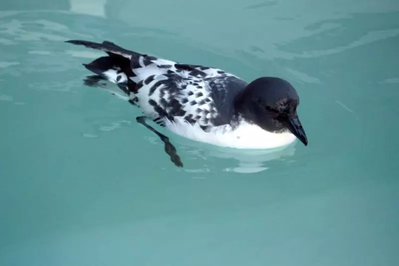
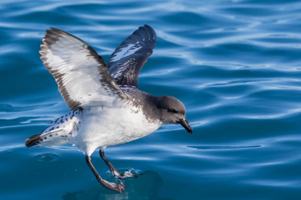
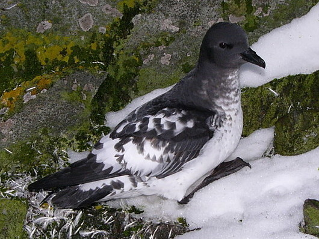
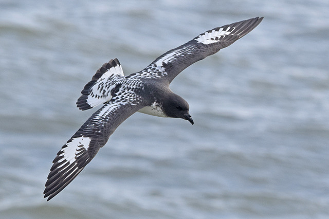

Pomba do cabo
A pomba-do-cabo (nome científico: Daption capense) é uma espécie de ave marinha que habita o hemisfério sul. É o único membro do gênero Daption.
Durante a época de reprodução, as pombas-do-cabo se alimentam na plataforma da Antártida e durante o inverno vão mais ao norte, até Angola e as ilhas Galápagos. Procriam em muitas ilhas da Antártida e ilhas subantárticas, algumas indo até as Ilhas Auckland, as Ilhas Chatham e Ilha Campbell.
A pomba-do-cabo é o único membro conhecido do gênero Daption e, por sua vez, é membro da família Procellariidae e da ordem Procellariiformes. Parece haver um subgrupo dentro da família que consiste nos Macronectes, os membros do gênero Fulmar, o Thalassoica antarctica e o Pagodroma nivea.

Todos os Procellariiformes compartilham certas características de identificação. Primeiro, possuem passagens nasais que se ligam ao bico superior, chamadas naricórnios. Produzem um óleo estomacal composto de ésteres de cera e triglicerídeos que é armazenado no proventrículo. Isso pode ser pulverizado para fora de suas bocas como uma defesa contra predadores e como uma fonte de alimento rica em energia para os jovens e adultos durante seus longos voos.[5] Por fim, possuem também uma glândula de sal que fica situada acima da passagem nasal e ajuda a dessalinizar seus corpos, devido à grande quantidade de água do mar que ingerem.
Descrição
É um petrel de aparência única. Tem a cabeça e o pescoço pretos, o ventre e o peito brancos,
e a parte inferior das asas é branca com uma borda preta. Suas costas e asas superiores são
pintadas de preto e branco, assim como sua cauda, que também tem uma faixa preta. Quando totalmente crescidas,
suas asas medem 86 cm e têm 39 cm de comprimento.


Comportamento
Dieta
Sua dieta é composta por 80% de crustáceos, peixes e lulas. O krill é o seu crustáceo favorito, o qual obtém por apreensão da superfície, bem como mergulhando debaixo d'água e filtrando-os. Também são conhecidos por seguir navios e comer resíduos comestíveis e carcaças jogadas ao mar. São agressivos enquanto se alimentam e cospem óleo de estômago nos competidores, até mesmo da sua própria espécie.
Reprodução
É um pássaro colonial e nidifica em penhascos ou terreno plano a um quilômetro do oceano. Tende a ter colônias menores do que outros petréis. Seus ninhos são formados com seixos e são colocados sob uma rocha pendente para proteção, ou em uma fenda. Em novembro, coloca um único ovo claro transparente, que é incubado por 45 dias por ambos os sexos. O ovo geralmente mede 53 por 38 milímetros. Defende seu ninho cuspindo óleo do estômago. Os mandriões, em particular, atacam ovos e filhotes da espécie. Após a eclosão, o filhote é chocado por dez dias até que possa se termorregular, e em seguida ambos os pais auxiliam na alimentação. Os filhotes emplumam depois de mais 45 dias, por volta de março.
Alcance e habitat
Durante a época de reprodução, a pomba-do-cabo se alimenta em torno da plataforma da Antártida e, durante o inverno, variam mais ao norte, até Angola e as Ilhas Galápagos. Reproduz-se em muitas ilhas da Antártida e nas ilhas subantárticas, alguns indo até as Ilhas Auckland, as Ilhas Chatham e a Ilha Campbell. Seus principais criadouros estão na Península Antártica, Geórgia do Sul, nas Ilhas Balleny, nas Ilhas Kerguelen, bem como nas ilhas do Mar da Escócia.[2]
Conservação
Tem um intervalo de ocorrência de 146 000 000 km2 (56 370 915 sq mi), e uma estimativa de 2009 aferiu que existiam 2 milhões de aves adultas desta espécie. A União Internacional para a Conservação da Natureza (IUCN) a classificou como "espécie pouco preocupante."